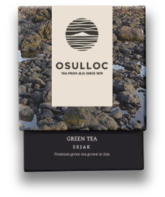
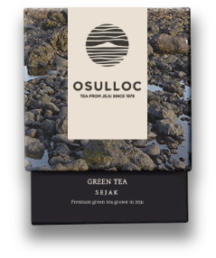
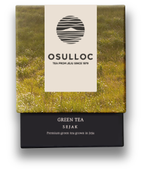
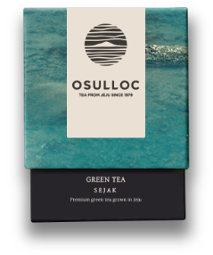
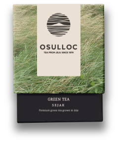
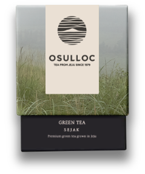
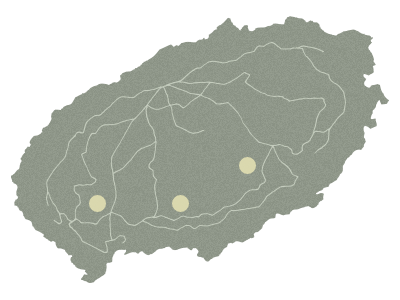

메모리 인 제주
사랑의 설렘과 추억을 향기에 담다.사랑의 추억을 담은 오설록 로맨틱 블랜디드 티
since 1979
-
흙,돌
 

-
빛

-
물

-
바람

-
안개

Terroir Story 제주는 엄청난 생명력을 가진, 2100여종의 식물자원이 분포하는 생태계 보고입니다.
이러한 제주는 화산지역이라는 생태계적 특성을 가져 차 품질의 특이성을 만들어 냅니다.
오설록의 차밭은 지리적 특성에 따라서 차의 특색이 조금씩 달라집니다.
이러한 개성을 지닌 오설록 3대 차밭의 찻잎들이 조화롭게 어우러져 오설록의 명차는 색(色), 향(香), 미(味)가 뛰어납니다. 
-
색(色)이 좋은
서광차밭
-
향(香)이 좋은
돌송이차밭
-
맛(味)이 좋은
한남차밭
-
연평균 기온 16ºC
명품 녹차 탄생 온도연평균 16ºC 인 제주에서
오설록의 녹차는 사계절 내내
따뜻한 빛을 품고 자라
최고의 명품녹차로 자라게 됩니다. -
언제나 촉촉한 화산회토,
연평균 강수량 1,800mm제주는 연평균 강수량 1,800mm로
깨끗한 대기와 화산회토가 걸러낸
천연 청정수를 머금어 차나무가
사계절 내내 건강하게 자랍니다. -
바람의 섬,
연평균 초속 4~7m제주는 남쪽의 먼 바다에서
연평균 초속 4~7m의 거센 바람이 불어와
뿌리의 수분 흡수를 증가시켜
녹차의 향기를 짙게 만들고
찻잎의 불순물을 씻어내는
자연 클리닝효과로 청정한 녹차를 만듭니다. -
아름다운 차 재배지,
394,200시간394,200시간은 천혜의
자연환경을 가진 차 재배지로 거듭나기까지
45여 년이라는 오설록의
아름다운 집념의 시간입니다. -
삼다연 숙성 시간,
100일찻잎을 제주 삼나무로 만든 통에 넣어
100일간 숙성시켜 만든
오설록의 삼다연은
삼나무의 향이 천연착향되어
삼다연만의 특별한 색향미를 가지고 있습니다.
Tea Museum 우리 차의 역사와 문화를 알리다
제주 오설록 서광 차밭과 맞닿아 있는 오설록 티뮤지엄은 아모레퍼시픽이 차와 한국 전통차 문화를 소개하고, 널리 보급하고자
2001년 9월에 개관한 국내 최초의 차 박물관입니다. 동양과 서양, 전통과 현대가 조화를 이룬 문화공간으로
차 유물관, 자연친화적인 휴식공간, 2013년 티클래스를 더해 21세기형 차 박물관으로 발돋움했습니다.
세계적인 디자인 건축 전문사이트인 ‘디자인붐’이 선정한 세계 10대 미술관에 오를만큼 안팎으로
아름다운 풍광을 뽐내는 티뮤지엄은 연간 150만 명의 관람객이 방문하는 제주 최고 명소이자 문화 공간입니다.